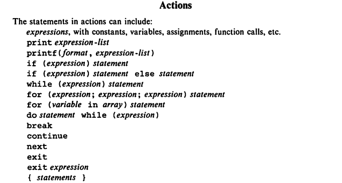

1 The AWK Language
2 The Input File countries
$ cat countries
| USSR | 8649 | 275 | Asia | |
| Canada | 3852 | 25 | North | America |
| China | 3705 | 1032 | Asia | |
| USA | 3615 | 237 | North | America |
| Brazil | 3286 | 134 | South | America |
| India | 1267 | 746 | Asia | |
| Mexico | 762 | 78 | North | America |
| France | 211 | 55 | Europe | |
| Japan | 144 | 120 | Asia | |
| Germany | 96 | 61 | Europe | |
| England | 94 | 56 | Europe |
- Fisrt column: Name of a country
- Second column: Area in thousands of square miles
- Third column: Population in millions
- Foruth column: Continent it is in
3 Program Format
- Pattern-action statements and the statements within an action are usually separated by newlines, but several statements may appear on one line if they are separated by semicolons. A semicolon may be put at the end of any statement.
4 Patterns
4.1 BEGIN and END
- One common use of a BEGIN action is to change the default way that
input lines are split into fields. The field separator is controlled
by a built-in variable called
FS. - By default, fields are separated by blanks and/or tabs; this
behavior occurs when
FSis set to a blank. - Setting FS to any character other than a blank makes that character the field separator.
4.2 Expressions as Patterns
- The string
""which contains no characters, is called the null string.
- In a relational comparison, if both operands are numeric, a numeric comparison is made; otherwise, any numeric operand is converted to a string, and then the operands are compared as strings.
4.3 String-Mattching Patterns
/Asia/
USSR 8649 275 Asia China 3705 1032 Asia India 1267 746 Asia Japan 144 120 Asia
$4 ~ /Asia/
USSR 8649 275 Asia China 3705 1032 Asia India 1267 746 Asia Japan 144 120 Asia
$4 !~ /Asia/
Canada 3852 25 North America USA 3615 237 North America Brazil 3286 134 South America Mexico 762 78 North America France 211 55 Europe Germany 96 61 Europe England 94 56 Europe
Note that /Asia/ is a shorthand for $0 ~ /Asia/
4.4 Regular Expression
- A regular expression is a notation for specifying and matching strings.
4.5 Compound Patters
$4 == "Asia" || $4 == "Europe"
USSR 8649 275 Asia China 3705 1032 Asia India 1267 746 Asia France 211 55 Europe Japan 144 120 Asia Germany 96 61 Europe England 94 56 Europe
4.6 Range patterns
- A range pattern consists of two patterns separated by a comma, as in
pat_1, pat_2
/Europe/, /Asia/
France 211 55 Europe Japan 144 120 Asia Germany 96 61 Europe England 94 56 Europe
FNR: is the line number just read from the current input file. It's another built in variable.FILENAME: Builtin variable representing the filename.
FNR == 1, FNR == 5 { print FILENAME ": " $0 }
countries: USSR 8649 275 Asia countries: Canada 3852 25 North America countries: China 3705 1032 Asia countries: USA 3615 237 North America countries: Brazil 3286 134 South America
In the above output it prints from line number 1 to 5.
4.7 Summary of Patterns
5 Actions

- Total population of Asian countries
$4 == "Asia" { pop = pop + $3; n = n + 1}
END { print "Total population of the", n,
"Asian countries is", pop, "million."
}
Total population of the 4 Asian countries is 2173 million.
- Find largest population:
$3 > maxpop { maxpop = $3; country = $1 }
END { print "country with larget population:", country, maxpop }
country with larget population: China 1032
5.1 Strings as Regular Expressions
BEGIN { digits = "^[0-9]+$"}
$2 ~ digits
USSR 8649 275 Asia Canada 3852 25 North America China 3705 1032 Asia USA 3615 237 North America Brazil 3286 134 South America India 1267 746 Asia Mexico 762 78 North America France 211 55 Europe Japan 144 120 Asia Germany 96 61 Europe England 94 56 Europe
5.2 Built-In String Functions
{ gsub(/USA/, "United States"); print}
USSR 8649 275 Asia Canada 3852 25 North America China 3705 1032 Asia United States 3615 237 North America Brazil 3286 134 South America India 1267 746 Asia Mexico 762 78 North America France 211 55 Europe Japan 144 120 Asia Germany 96 61 Europe England 94 56 Europe
{ gsub(/Asia/, "Asiana", $4); print $0}
USSR 8649 275 Asiana Canada 3852 25 North America China 3705 1032 Asiana USA 3615 237 North America Brazil 3286 134 South America India 1267 746 Asiana Mexico 762 78 North America France 211 55 Europe Japan 144 120 Asiana Germany 96 61 Europe England 94 56 Europe
- The function
substr(s,p)returns the fuffix ofsthat begins at positionp. Ifsubstr(s,p,n)is used, only the firstncharacters of the suffix are returned.
{ $1 = substr($1, 1, 3); print $0}
USS 8649 275 Asia Can 3852 25 North America Chi 3705 1032 Asia USA 3615 237 North America Bra 3286 134 South America Ind 1267 746 Asia Mex 762 78 North America Fra 211 55 Europe Jap 144 120 Asia Ger 96 61 Europe Eng 94 56 Europe
{ s = s substr($1, 1, 3) " "}
END { print s }
USS Can Chi USA Bra Ind Mex Fra Jap Ger Eng
5.3 Number or String?
- The value of an expression may be automatically converted from a number to a string or vice versa, depending on what operation is applied to it.
- In an arithmetic expression like
pop + $3, the operandspopand$3must be numeric, so their values will be forced or coerced to numbers if they are not already. - In a string expression like
$1 $2the operands$1and$2must be strings to be concatenated, so they will be coerced to strings if necessary. - There are two idioms for coercing an expression of one type to the
other:
number ""concatenate a null string tonumberto coerce it to a stringstring + 0add zero tostringto coerce it to a number
5.4 Control Flow Statements
5.5 Empty Statement
- Semicolon denotes the empty statement.
5.6 Arrays
- Awk provides one-dimensional arrays for storing strings and numbrs.
- Printing file in reverse:
{ x[NR] = $0 }
END { for(i=NR;i > 0;i--) print x[i]}
England 94 56 Europe Germany 96 61 Europe Japan 144 120 Asia France 211 55 Europe Mexico 762 78 North America India 1267 746 Asia Brazil 3286 134 South America USA 3615 237 North America China 3705 1032 Asia Canada 3852 25 North America USSR 8649 275 Asia
- Finding asian and european population:
/Asia/ { pop["Asia"] += $3 }
/Europe/ { pop["Europe"] += $3 }
END { print "Asian population is", pop["Asia"], "million."
print "European population is", pop["Europe"], "million."
}
Asian population is 2173 million. European population is 172 million.
5.7 Delete startement
- An array element may be deleted with
delete array[subscript]
6 User-Defined Functions
function name(parameter-list) {
statements
}
- Example code:
{ print max($2,$3) }
function max(a, b) {
return a > b ? a : b
}
8649 3852 3705 3615 3286 1267 762 211 144 96 94
7 Output
printandprintfstatements generate output.
7.1 Output Separators
OFS: Built-in variable representing output field separator.ORS: Built-in variable representing output record separator.
BEGIN { OFS = ":"; ORS = "|"}
{ print $1, $2 }
USSR:8649|Canada:3852|China:3705|USA:3615|Brazil:3286|India:1267|Mexico:762|France:211|Japan:144|Germany:96|England:94|
7.2 printf
7.3 Output into Files
- The redirection operators
>and>>are used to put outputs into files instead of the standard output. - Example program to write to two files based on smaller and big population:
$3 > 100 { print $1, $3 >"bigpop"}
$3 <= 100 { print $1, $3 >"smallpop"}
$ echo bigpop
$ bat bigpop
$ echo "---\n smallpop"
$ bat smallpop
| bigpop | |
| USSR | 275 |
| China | 1032 |
| USA | 237 |
| Brazil | 134 |
| India | 746 |
| Japan | 120 |
| --- | |
| smallpop | |
| Canada | 25 |
| Mexico | 78 |
| France | 55 |
| Germany | 61 |
| England | 56 |
- If
>>is used, the file is not cleared; output is appended after the original contents.
7.4 Output into Pipes
- Let's sort continents by population:
{ pop[$4] += $3 }
END { for (c in pop)
printf("%-7s %d\n", c, pop[c]) | "sort -r -n -k2,2"
}
Asia 2173 North 340 Europe 172 South 134
7.5 Closing Files and pipes
- The statement
close(expr)closes a file or pipe denoted byexpr; the string value ofexprmust be the same as the string used to create the file or pipe in the first place. - Thus,
close("sort -r -n k2,2")closes the sort pipe opened above. closeis necessary if you intend to write a file, then read it later in the same program.
8 Input
8.1 Input Separators
- The default built-in variable
FSis" "a single blank. WhenFShas this value, input fields are separated by blanks and/or tabs. Note that the leading blanks and tabs are discarded. WhenFShas other value, the leading blanks and tabs are not discarded.
8.2 Multiline Records
- By default records are separated by newlines. The terms "line" and "record" are normally synonymous.
RS: Built in record separator variable. Default value:"\n"
8.3 The getline Function
- Can be used to read input from the current input or from a file or pipe.
8.4 Command Line Arguments
$ awk -f progfile a v=1 b
ARGChas the value 4.ARGV[1]contains aARGV[2]contains v=1ARGV[3]contains b
9 Interaction with Other Programs
9.1 The system Function
- The built-in function system(expression) executes the command given by the string value of expression. The value returned by system is the status returned by the command executed.
/Asia/ { system("echo " $0)}
USSR 8649 275 Asia China 3705 1032 Asia India 1267 746 Asia Japan 144 120 Asia
10 Built in variables